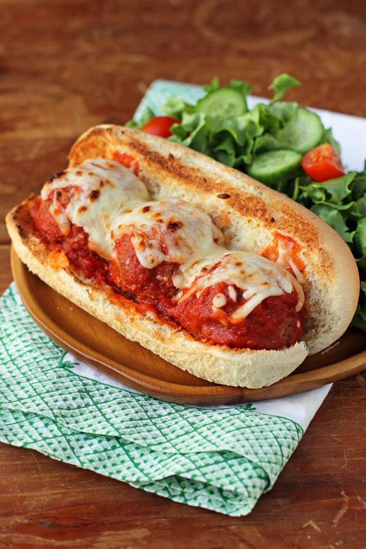

The sandwich primarily consists of meatballs (typically made from beef or pork), a tomato sauce, commonly marinara, and bread, such as Italian bread, baguette and bread rolls. Cheese such as provolone and mozzarella is sometimes used as an ingredient.Additional ingredients can include garlic, green pepper and butter, among others. It is sometimes prepared in the form of a submarine sandwich.
The meatball sandwich is claimed to have been invented in the early 20th century in the United States. The precise origin is unknown, but it is often associated with Italian-American immigrant communities in the northeastern United States. It became a popular dish due to its affordability and delicious taste, evolving into a staple of Italian-American cuisine.

There are many delis located in the Colorado Springs.